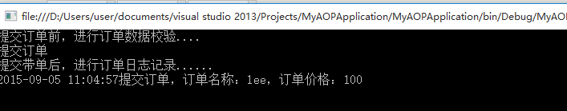
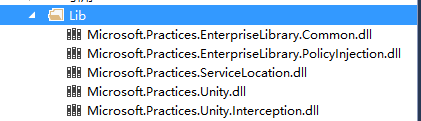
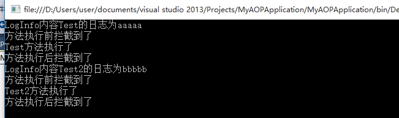
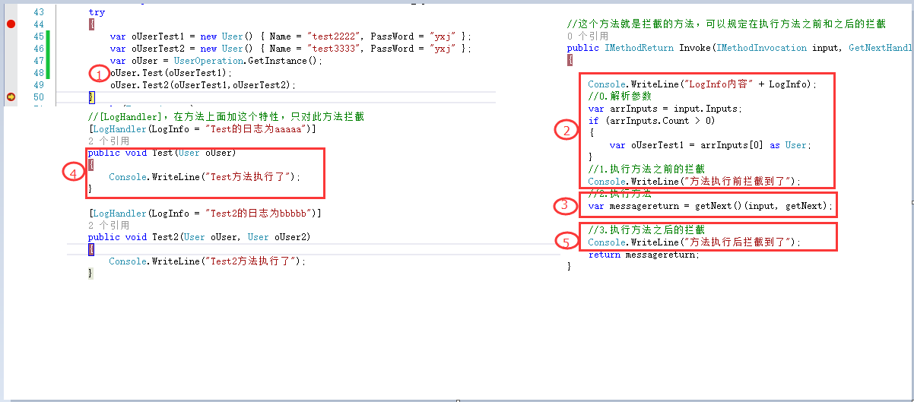

（点击上方蓝字，可快速关注我们）
来源：懒得安分
链接：http://www.cnblogs.com/landeanfen/p/4782370.html
前言：这篇打算写写AOP，说起AOP，其实博主接触这个概念也才几个月，了解后才知道，原来之前自己写的好多代码原理就是基于AOP的，比如MVC的过滤器Filter，它里面的异常捕捉可以通过FilterAttribute,IExceptionFilter去处理，这两个对象的处理机制内部原理应该就是AOP，只不过之前没有这个概念罢了。
老规矩，还是先看官方解释：AOP（Aspect-Oriented Programming，面向切面的编程），它是可以通过预编译方式和运行期动态代理实现在不修改源代码的情况下给程序动态统一添加功能的一种技术。它是一种新的方法论，它是对传统OOP编程的一种补充。OOP是关注将需求功能划分为不同的并且相对独立，封装良好的类，并让它们有着属于自己的行为，依靠继承和多态等来定义彼此的关系；AOP是希望能够将通用需求功能从不相关的类当中分离出来，能够使得很多类共享一个行为，一旦发生变化，不必修改很多类，而只需要修改这个行为即可。AOP是使用切面（aspect）将横切关注点模块化，OOP是使用类将状态和行为模块化。在OOP的世界中，程序都是通过类和接口组织的，使用它们实现程序的核心业务逻辑是十分合适。但是对于实现横切关注点（跨越应用程序多个模块的功能需求）则十分吃力，比如日志记录，权限验证，异常拦截等。
博主的理解：AOP就是将公用功能提取出来，如果以后公用功能的需求发生变化，只需要改动公用的模块的代码即可，多个调用的地方则不需要改动。所谓面向切面，就是只关注通用功能，而不关注业务逻辑。实现方式一般是通过拦截。比如，我们随便一个Web项目基本都有的权限验证功能，进入每个页面前都会校验当前登录用户是否有权限查看该界面，我们不可能说在每个页面的初始化方法里面都去写这段验证的代码，这个时候我们的AOP就派上用场了，AOP的机制是预先定义一组特性，使它具有拦截方法的功能，可以让你在执行方法之前和之后做你想做的业务，而我们使用的时候只需要的对应的方法或者类定义上面加上某一个特性就好了。
博主觉得它的优势主要表现在：
1、将通用功能从业务逻辑中抽离出来，可以省略大量重复代码，有利于代码的操作和维护。
2、在软件设计时，抽出通用功能(切面)，有利于软件设计的模块化，降低软件架构的复杂度。也就是说通用的功能都是一个单独的模块，在项目的主业务里面是看不到这些通用功能的设计代码的。
为了说明AOP的工作原理，博主打算先从一个简单的例子开始，通过静态拦截的方式来了解AOP是如何工作的。
public class Order
{
public int Id { set; get; }
public string Name { set; get; }
public int Count { set; get; }
public double Price { set; get; }
public string Desc { set; get; }
}
public interface IOrderProcessor
{
void Submit(Order order);
}
public class OrderProcessor : IOrderProcessor
{
public void Submit(Order order)
{
Console.WriteLine("提交订单");
}
}
public class OrderProcessorDecorator : IOrderProcessor
{
public IOrderProcessor OrderProcessor { get; set; }
public OrderProcessorDecorator(IOrderProcessor orderprocessor)
{
OrderProcessor = orderprocessor;
}
public void Submit(Order order)
{
PreProceed(order);
OrderProcessor.Submit(order);
PostProceed(order);
}
public void PreProceed(Order order)
{
Console.WriteLine("提交订单前，进行订单数据校验....");
if (order.Price 0)
{
Console.WriteLine("订单总价有误，请重新核对订单。");
}
}
public void PostProceed(Order order)
{
Console.WriteLine("提交带单后，进行订单日志记录......");
Console.WriteLine(DateTime.Now.ToString("yyyy-MM-dd HH:mm:ss") + "提交订单，订单名称：" + order.Name + "，订单价格：" + order.Price);
}
}
调用代码：
static void Main(string[] args)
{
Order order = new Order() { Id = 1, Name = "lee", Count = 10, Price = 100.00, Desc = "订单测试" };
IOrderProcessor orderprocessor = new OrderProcessorDecorator(new OrderProcessor());
orderprocessor.Submit(order);
Console.ReadLine();
}
得到结果：

上面我们模拟订单提交的例子，在提交一个订单前，我们需要做很多的准备工作，比如数据有效性校验等；订单提交完成之后，我们还需要做日志记录等。上面的代码很简单，没有任何复杂的逻辑，从上面的代码可以看出，我们通过静态植入的方式手动在执行方法前和执行方法后让它做一些我们需要的功能。AOP的实现原理应该也是如此，只不过它帮助我们做了方法拦截，帮我们省去了大量重复代码，我们要做的仅仅是写好拦截前和拦截后需要处理的逻辑。
了解了静态拦截的例子，你是否对AOP有一个初步的认识了呢。下面我们就来到底AOP该如何使用。按照园子里面很多牛人的说法，AOP的实现方式大致可以分为两类：动态代理和IL 编织两种方式。博主也不打算照本宣科，分别拿Demo来说话吧。下面就以两种方式各选一个代表框架来说明。
动态代理方式，博主就以微软企业库(MS Enterprise Library)里面的PIAB(Policy Injection Application Block)框架来作说明。
首先需要下载以下几个dll，然后添加它们的引用。

然后定义对应的Handler
public class User
{
public string Name { set; get; }
public string PassWord { set; get; }
}
#region 1、定义特性方便使用
public class LogHandlerAttribute : HandlerAttribute
{
public string LogInfo { set; get; }
public int Order { get; set; }
public override ICallHandler CreateHandler(IUnityContainer container)
{
return new LogHandler() { Order = this.Order, LogInfo = this.LogInfo };
}
}
#endregion
#region 2、注册对需要的Handler拦截请求
public class LogHandler : ICallHandler
{
public int Order { get; set; }
public string LogInfo { set; get; }
//这个方法就是拦截的方法，可以规定在执行方法之前和之后的拦截
public IMethodReturn Invoke(IMethodInvocation input, GetNextHandlerDelegate getNext)
{
Console.WriteLine("LogInfo内容" + LogInfo);
//0.解析参数
var arrInputs = input.Inputs;
if (arrInputs.Count > 0)
{
var oUserTest1 = arrInputs[0] as User;
}
//1.执行方法之前的拦截
Console.WriteLine("方法执行前拦截到了");
//2.执行方法
var messagereturn = getNext()(input, getNext);
//3.执行方法之后的拦截
Console.WriteLine("方法执行后拦截到了");
return messagereturn;
}
}
#endregion
#region 3、用户定义接口和实现
public interface IUserOperation
{
void Test(User oUser);
void Test2(User oUser, User oUser2);
}
//这里必须要继承这个类MarshalByRefObject，否则报错
public class UserOperation : MarshalByRefObject, IUserOperation
{
private static UserOperation oUserOpertion = null;
public UserOperation()
{
//oUserOpertion = PolicyInjection.Create();
}
//定义单例模式将PolicyInjection.Create()产生的这个对象传出去，这样就避免了在调用处写这些东西
public static UserOperation GetInstance()
{
if (oUserOpertion == null)
oUserOpertion = PolicyInjection.Create();
return oUserOpertion;
}
//调用属性也会拦截
public string Name { set; get; }
//[LogHandler]，在方法上面加这个特性，只对此方法拦截
[LogHandler(LogInfo = "Test的日志为aaaaa")]
public void Test(User oUser)
{
Console.WriteLine("Test方法执行了");
}
[LogHandler(LogInfo = "Test2的日志为bbbbb")]
public void Test2(User oUser, User oUser2)
{
Console.WriteLine("Test2方法执行了");
}
}
#endregion
最后我们来看调用的代码：
static void Main(string[] args)
{
try
{
var oUserTest1 = new User() { Name = "test2222", PassWord = "yxj" };
var oUserTest2 = new User() { Name = "test3333", PassWord = "yxj" };
var oUser = UserOperation.GetInstance();
oUser.Test(oUserTest1);
oUser.Test2(oUserTest1,oUserTest2);
}
catch (Exception ex)
{
//throw;
}
}
得到结果如下：

我们来看执行Test()方法和Test2()方法时候的顺序。

由于Test()和Test2()方法上面加了LogHander特性，这个特性里面定义了AOP的Handler，在执行Test和Test2方法之前和之后都会进入Invoke()方法里面。其实这就是AOP的意义所在，将切面的通用功能在统一的地方处理，在主要逻辑里面直接用过特性使用即可。
静态织入的方式博主打算使用PostSharp来说明，一来这个使用起来简单，二来项目中用过这种方式。
Postsharp从2.0版本就开始收费了。为了说明AOP的功能，博主下载了一个免费版本的安装包，使用PostSharp与其它框架不太一样的是一定要下载安装包安装，只引用类库是不行的，因为上文说过，AOP框架需要为编译器或运行时添加扩展。使用步骤如下：
（1）下载Postsharp安装包，安装。
（2）在需要使用AOP的项目中添加PostSharp.dll 这个dll的引用。
（3）定义拦截的方法：
[Serializable]
public class TestAop : PostSharp.Aspects.OnMethodBoundaryAspect
{
//发生异常时进入此方法
public override void OnException(MethodExecutionArgs args)
{
base.OnException(args);
}
//执行方法前执行此方法
public override void OnEntry(MethodExecutionArgs args)
{
base.OnEntry(args);
}
//执行方法后执行此方法
public override void OnExit(MethodExecutionArgs args)
{
base.OnExit(args);
}
}
注意这里的TestAop这个类必须要是可序列化的，所以要加上[Serializable]特性
（4）在需要拦截功能的地方使用。
在类上面加特性拦截，此类下面的所有的方法都会具有拦截功能。
[TestAop]public class Impc_TM_PLANT : Ifc_TM_PLANT
{
///
/// 获取或设置服务接口。
///
private Ic_TM_PLANTService service { get; set; }
public IList Find()
{
DTO_TM_PLANT otest = null;
otest.NAME_C = "test";
//异常，会进入OnException方法
return service.FindAll();
}
}
方法上面加特性拦截，只会拦截此方法。
[TestAop]
public IList Find()
{
DTO_TM_PLANT otest = null;
otest.NAME_C = "test";
return service.FindAll();
}
有没有感觉很简单，很强大，其实这一简单应用，解决我们常见的日志、异常、权限验证等功能简直太小菜一碟了。当然Postsharp可能还有许多更加高级的功能，有兴趣可以深究下。
public class AOPFilterAttribute : ActionFilterAttribute, IExceptionFilter
{
public void OnException(ExceptionContext filterContext)
{
throw new System.NotImplementedException();
}
public override void OnActionExecuting(ActionExecutingContext filterContext)
{
base.OnActionExecuting(filterContext);
}
public override void OnActionExecuted(ActionExecutedContext filterContext)
{
base.OnActionExecuted(filterContext);
}
}
在controller里面使用该特性：
[AOPFilter]
public JsonResult GetEditModel(string strType)
{
var lstRes = new List>();
var lstResPage = new List();
//.........todo
return Json(new { lstDataAttr = lstRes, PageAttr = lstResPage, lstJsConnections = lstJsPlumbLines }, JsonRequestBehavior.AllowGet);
}
调试可知，在执行GetEditModel(string strType)方法之前，会先执行OnActionExecuting()方法，GetEditModel(string strType)之后，又会执行OnActionExecuted()方法。这在我们MVC里面权限验证、错误页导向、日志记录等常用功能都可以方便解决。
【今日微信公号推荐↓】
更多推荐请看《值得关注的技术和设计公众号》
其中推荐了包括技术、设计、极客 和 IT相亲相关的热门公众号。技术涵盖：Python、Web前端、Java、安卓、iOS、PHP、C/C++、.NET、Linux、数据库、运维、大数据、算法、IT职场等。点击《值得关注的技术和设计公众号》，发现精彩！
点击阅读原文，查看音乐节歌单
![]()